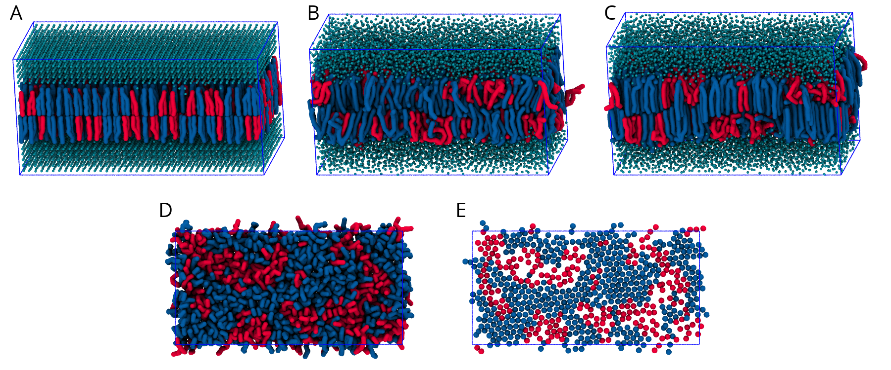
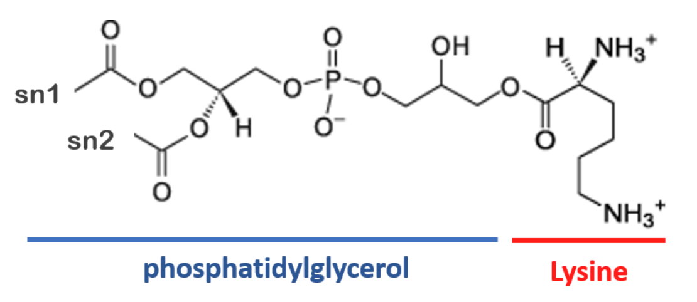

Lipid bilayers - Part II: Complex mixtures
In case of issues, please contact lpborgesaraujo@tecnico.ulisboa.pt or m.n.melo@itqb.unl.pt.
Summary
Introduction
When setting up large and/or complex bilayers it can be more convenient, or necessary, to start with a bilayer close to equilibrium rather than trying to get the bilayer to self-assemble. This can be done by concatenating (e.g. using gmx genconf) and/or altering previously formed bilayers, but an easier approach is to use a bilayer formation program such as insane.py[1] (available in the directory scripts/ or downloadable in the Downloads -> Tools -> Proteins and bilayers section of the website, under the insane topic. You can also check its GitHub repo for the most up-to-date version, and instructions on installing with pip).
Note: This tutorial assumes you are familiar with running Martini 3 simulations with GROMACS, and with the organization of the particle and molecule topologies bundled with the Martini 3 release. For a lipid-centered primer on these topics you can run the Lipid Bilayers I tutorial. Depending on the version of
Insaneyou run, and on whether you run the supplied analysis, you will need to have installed the numpy and MDAnalysis Python packages. You can typically install them via the pip command:
pip3 install --user numpy mdanalysisComplex mixtures with Insane
Insane (INSert membrANE) is a CG building tool that generates membranes by distributing lipids over a grid. Lipid structures are derived from simple template definitions. Many are already included with the program (see below on how to add new ones). The program uses two grids, one for the inner and one for the outer leaflet, and distributes the lipids randomly over the grid cells with numbers according to the relative quantities specified. This allows for building asymmetric bilayers with specific lipid compositions. The program also allows for adding solvent and ions, using a similar grid protocol to distribute them over a 3D grid. Finally, Insane script can also be used to set up a complex (or simple!) bilayer system including membrane protein, see the Martini protein tutorial. Additional information about the functionality of Insane can be found by running insane.py -h.
Because Insane deals mostly with structure generation, it can be used for both Martini 2 and 3 lipids, to the extent that they keep the same number of beads and mapping. However, beware that this may not be always true for future Martini 3 lipid models. Conversely, not all the lipid types you’ll find available in Insane have been implemented in Martini 3.
As with other tutorials, this one offers a worked version with all the intermediate steps LipidBilayers_Part2_Worked.tar, and a bare one, that expects you to do and simulate more LipidBilayers_Part2.tar. Unpack the tutorial’s archive and enter the directory complex-bilayers/. We will create with insane.py a fully hydrated 3:1 mole ratio bilayer of dibehenoyl-phosphatidylcholine (DBPC) : dilinoleyl-phosphatidylcholine (DIPC), with physiological ion concentrations. DBPC has long saturated chains (22:0), whereas DIPC’s are shorter and polyunsaturated (18:2). Because of its saturation, DBPC has a gel-to-liquid transition temperature of 348 K; DIPC’s transition occurs at 216 K [2]. By simulating a mixture of these lipids at an intermediate temperature, we can expect the formation of two coexisting phases: a gel one enriched in DBPC, and a liquid one enriched in DIPC. In this tutorial we will be running a simulation at 283K, using DBPC and DIPC as opposite extremes to ensure a successful separation. We do this because Martini can’t (yet) always model this sort of phase separation when lipid transition temperatures are closer together; hopefully parameterization advances coupled to Martini 3 will be able to solve this!
Start by running insane.py:
python insane.py -salt 0.15 -x 25 -y 25 -z 11 -sol W -o membrane.gro -l DIPC:1 -l DBPC:3 -p topol.topThis will generate an initial configuration for the system membrane.gro (Fig. 1A) and a starting point for a working topology topol.top, which you must complete and correct (depending on the version of insane.py, your topol.top may have some includes referring to Martini 2 .itps, and some incompatible ion name spellings).
Then, energy minimize the structure and gently equilibrate the system using the provided .mdp files. Note, because this simulation contains multiple components you will have to make an index file (using gmx make_ndx) and group all the lipids together and all the solvent together to fit the specified groups in the .mdp files; the .mdp files provided expect the index group names Bilayer and Solvent.
As all the bilayer lipids and solvent were placed on a grid (Fig. 1A), even after minimization they can still be in an energetically unfavorable state. Due to the large forces involved it is sometimes (but not always) necessary to run a few equilibrium simulations using a short time step (1-10 fs) before running production simulations with longer Martini time steps (we will be using 20 fs). The initial grid order imposed by insane.py should relax in a few ns (Fig. 1B), we recommend simulating for 5-30 ns using the Berendsen pressure coupling algorithm, to relax the membrane area, before switching to Parrinello-Rahman for the production run. This mixture separates in about one microsecond at a temperature of 283 K (Fig. 1C,D,E). If you don’t want to wait that long for your simulation, a sample run is provided for you under phase_sep.xtc (if you’re not using the ‘worked’ tutorial files, you can get it from [here])
If you have VMD installed and name your .tpr file and output trajectory phase_sep.tpr, phase_sep.xtc, respectively, you can load a similar visualization to that in Fig. 1 by running the do_vmd.sh script.

insane.py B) After a 20 ns long simulation the grid structure is gone. C,D,E) After about 1µs at 283 K this lipid mixture phase separates into ld and so domains; D and E show the top view of the simulation, and in E only the first bead of each acyl tail of the top leaflet is represented, highlighting the gel-phase hexagonal packing (VMD’s use of multi-frame position averaging further highlights the honeycomb pattern). In all panels DBPC is in blue and DIPC in red.Analysis — hexagonality
This system can be subjected to several types of analysis (see the Lipid Bilayers I tutorial for general examples). Some specific analyses can be used to characterize this phase separation. Namely, those that look at lipid order and contacts (sadly, the do_order.py script you may have used in the Lipid Bilayers I tutorial is not compatible with lipid mixtures). Here we’ll quantify the ‘hexagonality’ of the lipid tail packing along the phase transition. In this measurement, that looks only at the tails’ first beads (see Fig 1B to understand why), a lipid tail is said to be hexagonally packed if:
- its first bead has at least 6 neighboring beads within 6 Å;
- all of its 6 closest neighbors have themselves at least 2 neighbors within 6 Å.
These criteria may yield some false positives and some false negatives, but are simple enough for this application (beware that different studies may employ different criteria for hexagonality). The script hexagonality.py computes this for you, for every frame, and outputs a hexagonality.xvg you can quickly plot with xmgrace. Make the script executable, if needed, run it, and appreciate the quantitative view of the degree of phase separation along time:
./hexagonality.py -f phase_sep.xtc -s topol.tpr
xmgrace hexagonality.xvgYou have now prepared, simulated and analyzed a phase-separating binary mixture of DIPC and DBPC lipids. Molecular simulations have a limited numerical accuracy, and this can sometimes create temperature imbalances — particularly in phase-separating systems[3]. As an extra step, it would be wise to also check the temperature of the separated parts and see if there are any imbalances limiting or exacerbating the phase seaparation.
Adding a new lipid headgroup: lysyl-PG
When working with complex lipid bilayer systems, you might find that your lipid of interest is not yet available in the Martini lipidome. If so, it might be necessary for you to parameterize a lipid headgroup yourself. In this part of the tutorial, we will outline how new lipid headgroups can be parameterized and leveraged to create complex bilayer systems, using Lysyl-PG as an example.
Lysyl-PG is a membrane lipid in several gram-positive bacteria, such as Staphylococcus aureus, which has been shown to confer a higher level of antimicrobial resistance to cationic host defense peptides [4]. Lysyl-PG consists of the ester of phosphatidylglycerol (PG) with the amino acid lysine (Fig 2). However, even though the lysine and PG topologies are available for Martini 3, there is no conjugated lysyl-PG topology yet.

Creating the lysyl-PG topology
To create the lysyl-PG topology, we will combine the pre-existing lysine and POPG topologies for Martini 3 by employing a simple conjugation, assuming a bond between the amino acid backbone (BB) and the PG glycerol (GL0) with the same characteristics as the phosphate – glycerol bond (PO4 – GL0) already in place.
Enter the directory NewHeadgroup/ within the tutorial’s archive. Start by finding the topology for POPG within the Martini 3 phospholipid topologies (./martini_v3.0.0_phospholipids_v1.itp), as well as the topology for lysine within the Martini 3 amino acid topology file (./martini_v3.0.0_proteins/force_fields/martini3001/aminoacids.ff). Create a new file named lysylPG.itp and copy over the two topologies.
Take a moment to look at the two topologies. These two must now be combined onto a single topology, taking care not to break any of the bonded parameters already in place. The simplest way of doing this is by using the POPG topology as a template and adding the lysine parameters on top. As such, start by renaming the molecule by changing the name in the [ moleculetype ] section to POLPG. We can then start merging the [ atoms ] section by adding the list of lysine atoms/beads to the top of the POPG atoms already in place. Care must now be taken to correctly renumber all of the atom entries as well as to change the residue names to POLPG.
At this point, your [ moleculetype ] and [ atoms ] sections should look something like this:
[moleculetype]
; molname nrexcl
POLPG 1
[atoms]
; id type resnr residu atom cgnr charge
1 P2 1 POLPG BB 1 0 ;Lysine
2 SC3 1 POLPG SC1 2 0
3 SQ4p 1 POLPG SC2 3 1.0
4 P4 1 POLPG GL0 4 0 ;POPG
5 Q5 1 POLPG PO4 5 -1.0
6 SN4a 1 POLPG GL1 6 0
7 N4a 1 POLPG GL2 7 0
8 C1 1 POLPG C1A 8 0
(continues …)Now take a look at the bonded parameters in place in the [bonds] and [angles] sections. Notice that since we renumbered the atom list, the POPG bonded parameters no longer correspond to the correct atoms/beads. To fix this we simply need to update the numbering on the bonded potentials to the current bead numbers:
The previous harmonic bond definition:
[bonds]
; i j funct length force.c.
1 2 1 0.36 7000 ;GL0 – PO4 bond
(…)After renumbering will now be:
[bonds]
; i j funct length force.c.
4 5 1 0.36 7000 ;GL0 – PO4 bond
(…)Renumber the POPG bonded parameters in the [ bonds ] and [ angles ] sections. After you’ve done this we can now add the lysine bonded parameters. The lysine topology contains 2 bonds and 1 angle potential. Since we added the lysine atoms/beads first in the [ atoms ] section we can simply add those to the list without needing to renumber them.
At this point we will now have the two topologies fully merged, however, the lysine and POPG moieties are not yet connected together! To connect them together we must add an additional bonded potential, linking the POPG glycerol (GL0) to the lysine backbone (BB). To do this we will assume that the bond in place is similar to the PO4 – GL0 in place. As such, create a new bonded potential linking the GL0 and BB beads with the same potential type, bond length and force constant as that of the PO4 – GL0 bond. Note that now that the glycerol group of the PG moiety is forming an ester bond with the lysine backbone, the chemical properties of the GL0 bead will be different from those when it was free. As such, we must change the bead type to account for the decrease in polarity from the loss of the hydroxyl group. Taking other Martini 3 models as examples, and with inspiration from the “Martini 3.0 Bible” [5] we can tentatively lower the GL0 bead’s polarity from P4 polarity to P1. The lysyl-PG topology is now complete.
Note that this was a “coarse” approach to the parameterization of a lipid headgroup, wher some assumptions were made for the sake of simplicity and brevity (e.g. assuming the
GL0 – BBester bond behaves as thePO4 – GL0bond, assuming lysine conformation dynamics remain the same when bonded to POPG, assuming the modified glycerol moiety is correctly represented by a P1 bead, etc.). However, this model could serve as a starting point for the refinement of a finer, more accurate model, focusing on the linkage details: bonds, angles, and dihedrals, as well as a finer tuning of the glycerol bead particle type. Refinement of lipid models typically use atomistic MD models of the same lipid as reference for their conformational dynamics. Additionally, other theoretical or experimental parameters are also used as reference targets, such as area per lipid. Refer to the tutorials on small molecule parameterization where some of these aspects are tackled in more detail.
Adding lysyl-PG to Insane
Having created a topology for lysyl-PG we now want to incorporate it in bilayers assembled by insane. However, since this is a new lipid topology, there are no available templates for our lysyl-PG lipid in inane, and we must define it ourselves.
Lipids in insane are defined schematically, based on templates. These templates roughly define the x,y,z pseudocoordinates for each of the CG beads. Adding a new template to insane is as simple as defining the position of each of the lipid beads in this pseudocoordinate system. Due to its smooth energy landscape, Martini is quite robust and much more tolerant to distortions of the starting structures than, for example, atomistic simulations. This allows us to construct complex membranes from very simple lipid templates. (See the insane publication for more details [1].) While different versions of insane have slightly different template formatting (compare with the GitHub version, for instance), the overall approach is very similar. Use your text editor of choice to open the insane.py file and look for the DPPC definition.
# PROTOLIPID (diacylglycerol), 18 beads
#
# 1-3-4-6-7--9-10-11-12-13-14 < -- This is the Lipid template
# \| |/ |
# 2 5 8-15-16-17-18-19-20
## Diacyl glycerols
moltype = "lipid"
lipidsx[moltype]=( 0, .5, 0, 0, .5, 0, 0, .5, 0, 0, 0, 0, 0, 0, 1, 1, 1, 1, 1, 1)
lipidsy[moltype]=( 0, 0, 0, 0, 0, 0, 0, 0, 0, 0, 0, 0, 0, 0, 0, 0, 0, 0, 0, 0)
lipidsz[moltype]=(10, 9, 9, 8, 8, 7, 6, 6, 5, 4, 3, 2, 1, 0, 5, 4, 3, 2, 1, 0)
lipidsa.update({ # 1 2 3 4 5 6 7 8 9 10 11 12 13 14 15 16 17 18 19 20
"DPPC":(moltype, " - - - NC3 - PO4 GL1 GL2 C1A C2A C3A C4A - - C1B C2B C3B C4B - -
"),
(…)A lipid template is defined by setting the relative x,y,z pseudocoordinates for each of the particles in the pseudotemplate in lipidsx, lipidsy and lipidsz, respectively. Each lipid entry will then populate the particles in the template as required. If you scroll around insane.py you will notice that some families of lipids will have their own templates, such as glycolipids or cardiolipins.
Note that the order in which the atoms are defined in the topology matters when defining the lipid template. While lipid atoms in Martini are typically roughly ordered from top to bottom (outermost headgroup bead to innermost acyl chain bead) this may not always be the case (e.g. phosphoinositol phosphates are defined after the headgroup sugar ring when they are typically the outermost beads). This is the case with our topology, where the backbone bead (BB) is defined before the most superficial SC2 bead. While we could re-order and adapt our topology to fit one of the pre-existing templates, we will create our own template specific to lysyl-PG.
Start by drawing out the template for lysyl-PG, using the DPPC or POPG template as a guide. If you are struggling with visualizing the structure, pen and paper are your friends! Having drawn the template, assign x,y,z pseudocoordinates for each of the beads, based on the preexisting templates. In our case, every bead from the phosphate bead (PO4) down should match the default diacylglycerol template. Do not pay too much attention to the distances between beads since, as it was previously mentioned, Martini is quite robust in handling rough starting conformations. Distances of 0.5 or 1 between beads are typical.
While it is worth noting that there are many valid templates, in the end, your lysyl-PG template should look something like this (note the difference in z-positions relative to the existing diacylglycerol templates of moltype = "lipid"):
# Lysyl-PG
# This is the Lysyl-PG lipid template
# 3 1-4-5-6--8--9-10-11-12-13 SC2 BB – GL0 – PO4 – GL1 – C1A – (…)
# \| | \ | |
# 2 7-14-15-16-17-18-19 SC1 GL2 – C1B – (…)
## Diacyl glycerols
moltype = "LYSYL-PG"
lipidsx[moltype]=( 0, .5, 0, 0, 0, 0, .5, 0, 0, 0, 0, 0, 0, 1, 1, 1, 1, 1,
1)
lipidsy[moltype]=( 0, 0, 0, 0, 0, 0, 0, 0, 0, 0, 0, 0, 0, 0, 0, 0, 0, 0,
0)
lipidsz[moltype]=( 9, 9, 10, 8, 7, 6, 6, 5, 4, 3, 2, 1, 0, 5, 4, 3, 2, 1,
0)
lipidsa.update({ # 1 2 3 4 5 6 7 8 9 10 11 12 13 14 15 16 17 18
19
"POLPG":moltype, " BB SC1 SC2 GL0 PO4 GL1 GL2 C1A C2A C3A C4A - - C1B C2B C3B C4B -
- "),
})If you’ve correctly added this entry to insane.py, you should now be able to assemble membranes containing lysyl-PG. Assemble a membrane composed of 5:1 POPG:Lysyl-PG using insane:
python2 insane.py -l POPG:5 -l POLPG:1 -x 25 -y 25 -z 11 -pbc cubic -sol W -o
membrane.gro -p topol.topAnd use it as a starting point to run a simulation with this complex membrane mixture, following the steps mentioned in the Lipid Bilayers I tutorial. If you are using the version of insane that we pack with the tutorial, you can further refine it by adding POLPG to the charges dictionary, which will allow you to use insane’s -salt and -neutral flags to get ionic strength and system neutralization in one go.
You now have a topology for a custom lipid, implemented in a way to be flexibly used by insane for quick membrane building. Good job! When doing this with real-life cases of new lipids, don’t forget to share your parameters with the community for added impact!
Tools and scripts used in this tutorial
GROMACS(http://www.gromacs.org/)insane.py(downloadable here)MDAnalysis(https://www.mdanalysis.org)
References
[1] Wassenaar, T. A., Ingólfsson, H. I., et al. Computational Lipidomics with insane: A Versatile Tool for Generating Custom Membranes for Molecular Simulations (2015) J. Chem. Theory Comput. 11, 2144–2155. DOI:10.1021/acs.jctc.5b00209
[2] Thermotropic Phase Transitions of Pure Lipids in Model Membranes and Their Modifications by Membrane Proteins, Dr. John R. Silvius, Lipid-Protein Interactions, John Wiley & Sons, Inc., New York, 1982
[3] Thallmair, S., Javanainen, M., Fábián, F., Martinez-Seara, H., Marrink, S.J., Nonconverged Constraints Cause Artificial Temperature Gradients in Lipid Bilayer Simulations (2021) J. Phys. Chem. B 125(33), 9537–9546. DOI:10.1021/acs.jpcb.1c03665
[4] Kilelee, E., Pokorny, Y., Yeaman, M. R., and Bayer, A. S. Lysyl-Phosphatidylglycerol Attenuates Membrane Perturbation Rather than Surface Association of the Cationic Antimicrobial Peptide 6W-RP-1 in a Model Membrane System: Implications for Daptomycin Resistance (2010) Antimicrob. Agents Chemother. 54, 4476–4479. DOI:10.1128/AAC.00191-10
[5] Souza, P. C. T., Alessandri, R., et al. (2021) Martini 3: a general purpose force field for coarse-grained molecular dynamics. Nat. Methods 18, 382–388. DOI: 10.1038/s41592-021-01098-3